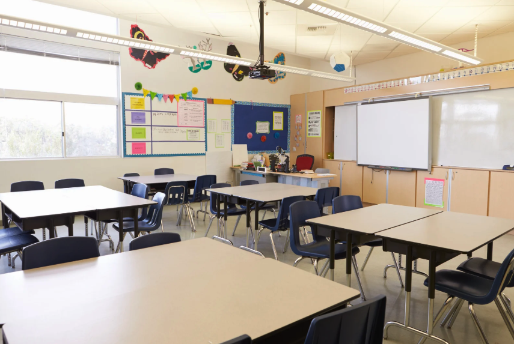
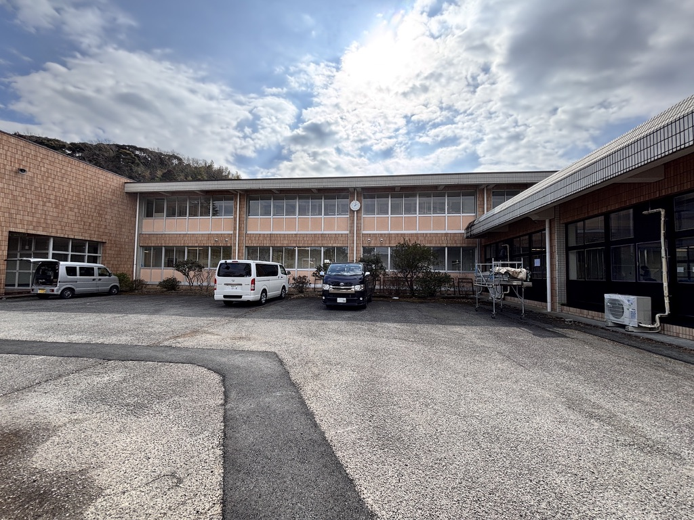
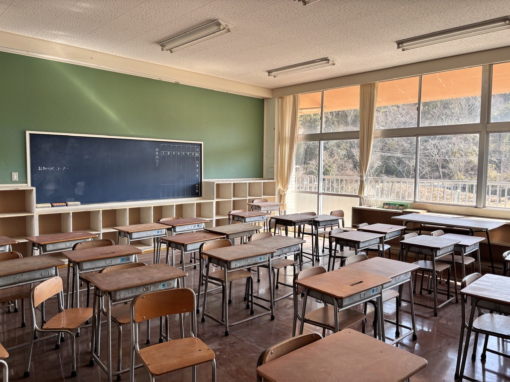
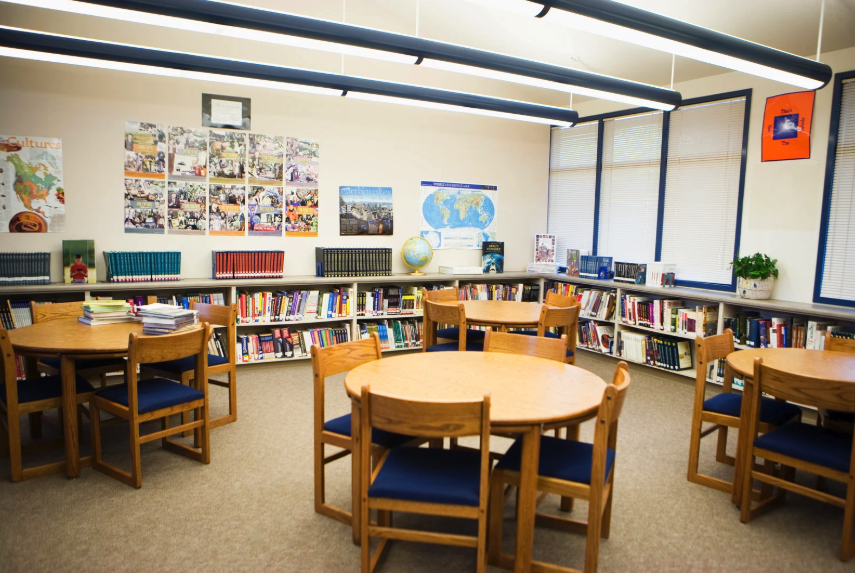
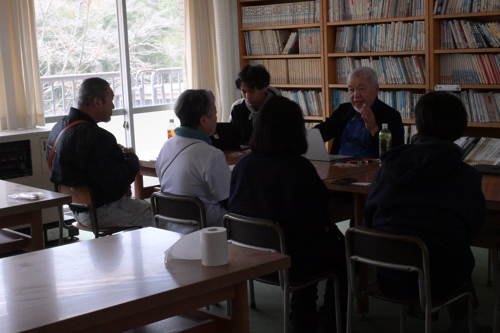
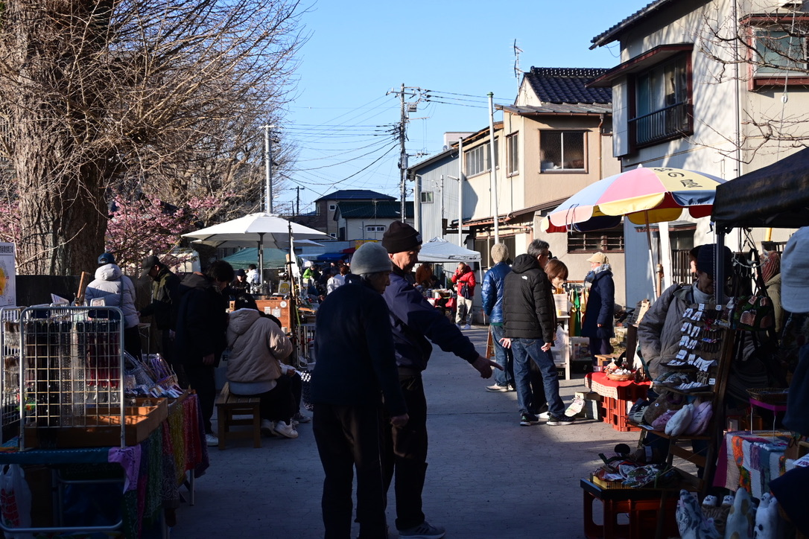
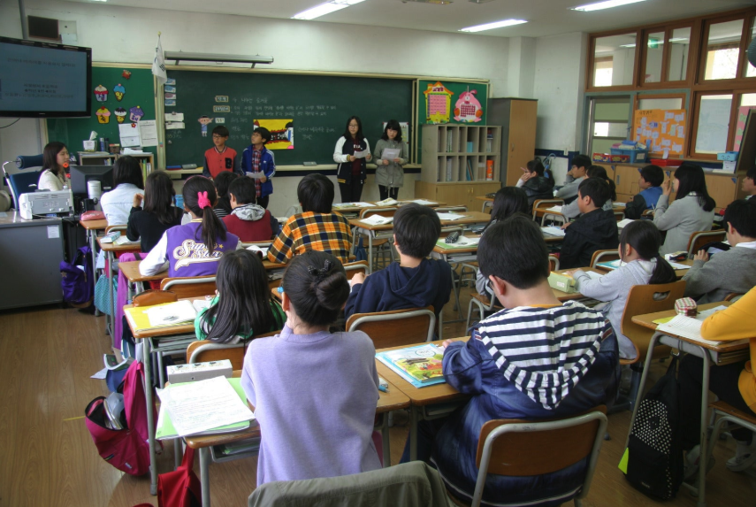
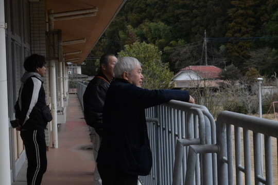
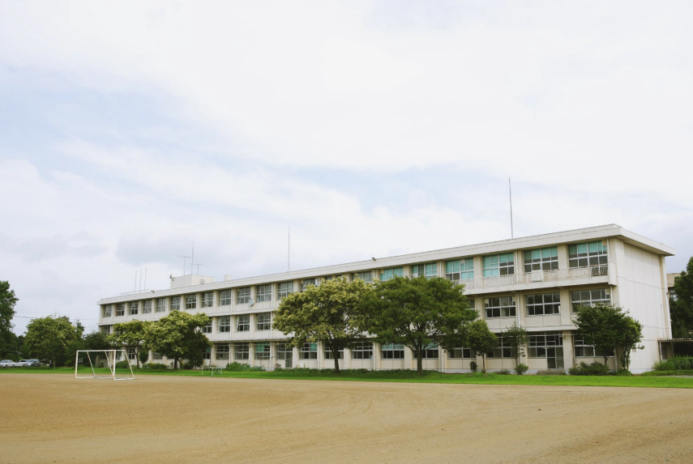

泊まる
地域にふれる滞在

KAMITAKI CAMPUS
旧上瀑小学校から生まれる、宿泊・学び・実践のキャンパス。
地元の人と訪れる人が交わり、大多喜のこれからを育てていきます。
CONCEPT

役目を終えた学校の記憶を受け継ぎながら、いまは世代を超えて学びと挑戦が育つ場へ。カミタキCAMPUSは、過去を残すだけでなく、未来を育てるために生まれ変わります。
廃校ではなく、次の学びの入口。

PLACE
城下町の歴史と自然が残る大多喜で、宿泊・学び・実践がひとつになるローカルキャンパス。
観光で終わらない滞在を生み、地域の困りごとを次の挑戦に変えていく場所です。

地域にふれる滞在

地域と世界にひらく学び

町からはじまる挑戦
COMMUNITY
ここで感じたことや学んだことが、別の場所で語られ、また戻ってくる。町民と訪れる人の交流から、観光で終わらない深い関わりが育っていきます。



また帰ってきたくなる
関係
FOR OOTAKI
この場所の出発点は、地元住民です。ここで雇用が生まれ、町に新しい役割が生まれる。大多喜に興味を持つ人が町で過ごし、町とつながり、また戻ってくる。地域の内と外がつながることで、町の未来は育っていきます。
この町の未来を、ここから。